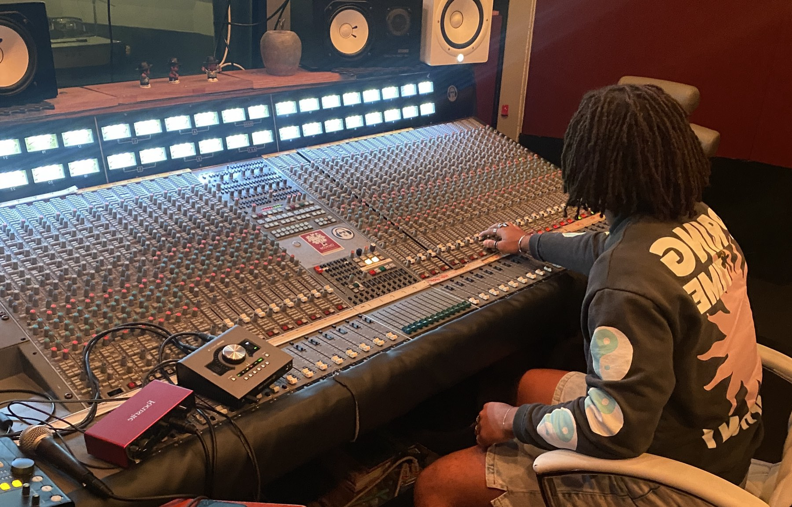

Clay Lewis
Film & Media ComposerUSC Screen Scoring MFA
Harmony Rescore
Work
A Second of Sight
MIT Compass Course
Compositions
Alas... Sanctuary
Action, Fantasy
1:21
Reminiscing in F
Orchestra, Family
0:47
Stank
Hip-Hop, Funk
0:45
Capgras
Thriller, Horror
1:16
About
I'm Clay — a composer working in film and media, currently earning my Screen Scoring MFA at USC in Los Angeles. Before that I studied music and computer science at MIT, where I wrote for orchestras, chamber ensembles, and student films, and picked up a few composition awards along the way. What draws me to scoring is the moment a scene starts telling you what it needs — I like writing music that serves the story first. I'm always looking for directors and collaborators to build something with. If that's you, say hello.
Contact
celscoring@gmail.com
Los Angeles, CA